深入理解Linux IO模型(一)
原创 Pearl Pearl的仲夏夜之梦 6月12日
Linux IO模型是后端工程师的必备技能。从以往的面试中看，部分后端开发人员对它的理解停留在调API的层面，我自己也理解欠缺。最近系统学习了一下，整理了此文。本文参考了一些文章，放在本文最后，大家可以直接去看这些文章，值得阅读。
- 本文为了描述方便，统一用读操作讲述，写操作同理。
- 本文为了撰写方便，统一将I/O写成了IO。
- 欢迎指正文中的错误。
操作系统预备知识
UNIX体系结构
UNIX操作系统的体系结构如图所示。
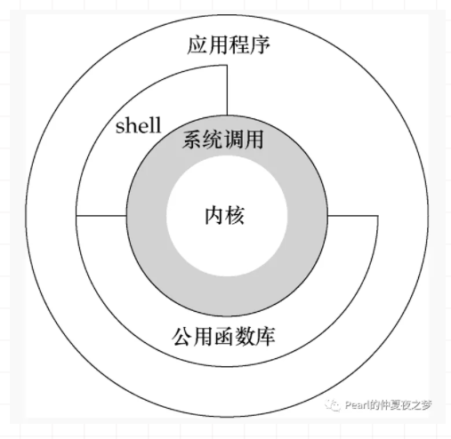
内核(kernel)：控制计算机硬件资源，提供程序运行环境。 系统调用(system call)：内核的函数接口。 公共函数库：构建在系统调用之上的函数接口。 shell：特殊的应用程序，为运行其他应用程序提供了一个接口。 应用程序：用户编写的程序。可使用公共函数库，也可直接调用系统调用。
系统调用
进一步介绍下系统调用(syscall)。 内核用于控制硬件资源，例如从磁盘上读写文件，需要控制硬盘这个硬件设备做IO操作。应用代码通过调用内核暴露出来的系统调用接口来使内核进行IO操作。 如图所示，库函数调用系统调用接口，应用程序可以调用系统调用和库函数。
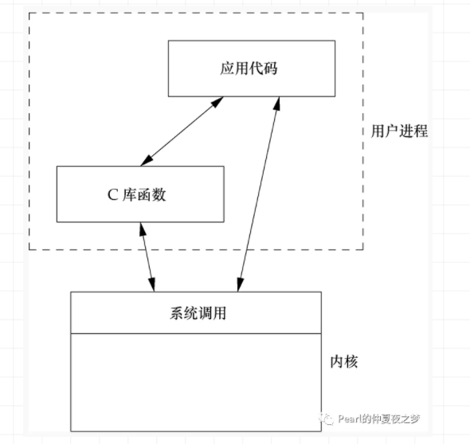
例如用户常用的printf函数，可以调用它输出内容到显示器上，但是控制显示器的输出是内核。系统调用提供的是write函数，printf是库函数，它封装了write 这个系统调用接口。
用户空间和内核空间
对于32位CPU（表示CPU的寄存器长度为32位），指令集长度32位，数据总线宽度32位，地址总线宽度32位（因为受到寄存器长度的限制，再大也是浪费，无法把指令或数据从内存装载到寄存器或把寄存器的值写入内存）。因为地址总线宽度32位，所以最大寻址范围2^32，即对应 2^32*8bit=4GB 内存寻址空间。虽然内存的最大寻址容量只有4GB，但是每个进程的虚拟存储空间却都为4GB。
虚拟存储空间是什么？
- MMU(内存管理单元)通过段页式存储管理，负责物理地址和逻辑地址(虚拟地址)的转化。逻辑空间可以理解为内存空间和磁盘空间之间的抽象，为了解决容量问题。
- 程序的局部性原理。CPU访问内存时，无论是存取指令还是数据，所访问的存储单元都趋于聚集在一个较小的连续区域中。程序运行时，无需全部装入内存，如果访问页不在内存，发出缺页中断，发起页面置换（页面置换有常用的几种算法，FIFO、LFU、LRU）。
操作系统怎么划分的虚拟存储空间？
- 程序在磁盘中，加载进内存后，才能变成进程运行起来。内存的第一个进程是kernel。
- kernel会注册一个GDT(Global Descriptor Table)，把4GB虚拟内存划分成用户空间和内核空间。最高的1GB，从虚拟地址 0xC0000000 到 0xFFFFFFFF），供内核使用，作为内核空间；较低的3GB，从虚拟地址0x00000000到0xBFFFFFFF），供各个应用进程使用，作为用户空间。
内核独立于普通的应用程序，可以访问受保护的内存空间，也有访问底层硬件设备的所有权限。为了保证内核的安全，用户进程不能直接操作内核。操作系统将4GB的虚拟存储空间划分为两部分，用户空间和内核空间。
CPU如何区分指令来自内核空间还是用户空间的？ 指令存储在内存中，通过数据总线加载到CPU的指令寄存器，CPU解码执行。实际上CPU本身并不能区分是谁发出的指令，而是通过特权等级来区分。以X86架构来说，CPU指令集的特权等级分为Ring0~3，内核空间对应指令集Ring0，具有最高权限，可以访问所有资源；用户空间对应指令集Ring3，不能直接访问硬件设备。
如果用户空间存在特权指令，CPU如何区分这个指令来自用户进程从而禁止执行？ CPU有两种执行模式，用户模式和内核模式。用户模式受到限制，某些指令不能被执行，某些寄存器不能被访问，IO设备也不能被访问。内核模式则没有这些限制，可以执行所有的机器指令，可以读写所有的内存位置。 这个问题我理解可能不到位，抛砖引玉。
用户态和内核态
进程运行时会有用户态和内核态的区别。 如图所示，程序执行时，如果执行的是用户空间的应用代码，这些代码运行在用户态；当调用了系统调用后，内核空间的内核代码就会执行，内核中的这些代码运行在内核态。
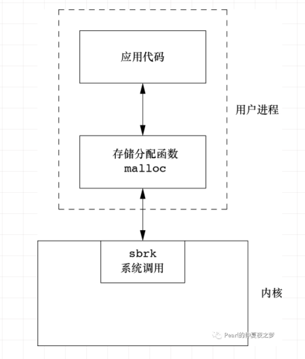
进程阻塞
进程有五个状态，创建、就绪、执行、阻塞和终止。 就绪状态：当进程被分配到除CPU以外所有必要的资源（包括PCB、栈空间、堆空间等）后。只要获得CPU的使用权，就可以立即执行。 执行状态：进程获得CPU，在执行的状态。单CPU同一时刻只能有一个进程在执行状态。 阻塞状态：因为某种原因如IO未就绪，进程放弃CPU的使用权，进入阻塞状态。
进程模型之间的切换关系如图所示。
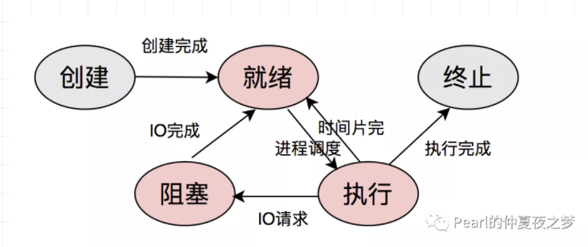
进程切换(进程调度)是指操作系统通过某种进程调度算法决定哪个就绪进程可以获得CPU的使用权。进一步说，内核以一定策略挂起当前正在利用CPU运行的进程，并保存进程的上下文运行信息，然后分配CPU给某个就绪状态的另一个进程执行。
可以看出，进程阻塞是进程的主动行为，只有处于获得CPU在执行状态的进程，才可能转变成阻塞状态。当进程进入阻塞状态，不占用CPU资源。所以，在执行IO请求后进入阻塞状态的进程，是不占用CPU资源的。
PCB(进程控制块)指的是什么？ PCB是进程常驻在内存中的通用数据结构，记录进程运行的全部信息，被用于操作系统调用时读取。记录包括进程的标识符、状态、优先级、程序计数器、内存指针、CPU的上下文数据、被进程占用的IO的状态信息、记账信息等。
中断
理解中断，对理解IO模型很重要。
任务事件
操作系统是事件驱动的，只有在有中断、陷阱或系统调用时才执行。如图所示。
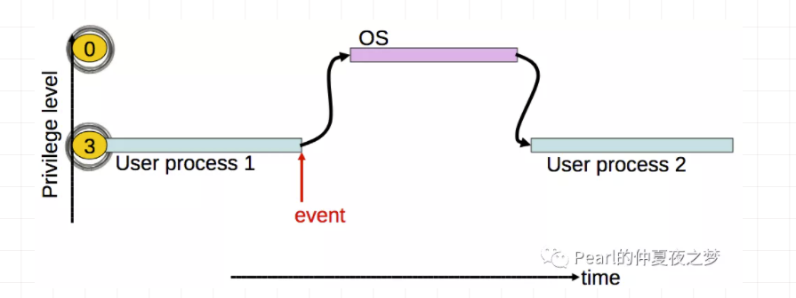
为什么操作系统要采用事件驱动设计呢？
- 操作系统不能信任用户进程
- 用户进程可能是错误的或恶意的
- 用户进程崩溃不应影响操作系统
2.操作系统需要保证对所有用户进程公平性
- 一个进程不能霸占CPU时间
- 采用定时中断的方式
事件触发简化流程如图所示。
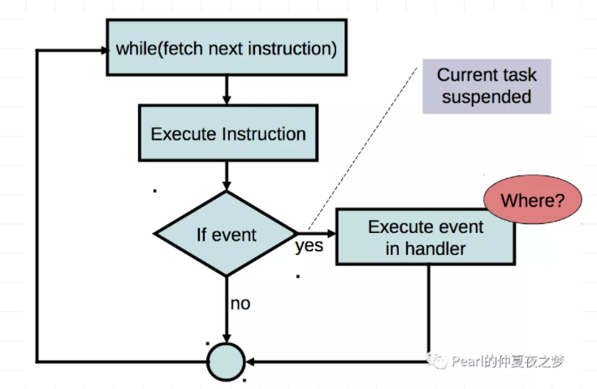
事件有中断和异常两类。中断由硬件或者程序触发，以引起操作系统的注意。异常由于非法操作而导致的。本文不讲异常，只讲中断。 中断又有硬件中断和软件中断之分：硬件中断由外部硬件设备触发；软件中断由应用进程触发。
每个中断都有一个编号，称为中断向量(interrupt vector)，用于在中断描述符表IDT(也称为中断向量表)中进行索引，从而获得中断服务程序的指针，即中断处理程序的入口点。
为什么「中断向量」不叫「中断指针」？我猜可能是历史原因，知道的读者可以留言告诉我。
硬件中断
与CPU相连接的外部设备，如键盘、鼠标、网卡等，偶尔需要CPU提供服务，但是CPU无法预测它们何时发生。 如果在数据采集系统中，可以采用CPU定期轮询设备的方式，以确定它们是否需要提供服务。否则，轮询会浪费CPU资源。 所以引入了硬件中断的方式，每个连接的外部设备都可以向CPU发出信号，表示它们需要CPU提供服务。一般来说，CPU有2个引脚，INT用于中断，NMI用于不可屏蔽的关键的信号。
如图所示，是8259可编程中断控制器。可支持转发8个中断。当设备通过中断请求(IRQ)引发中断，CPU确认并查询8259以确定哪个设备产生中断。8259可以为每个IRQ线分配优先权，可以级联以支持更多的中断。
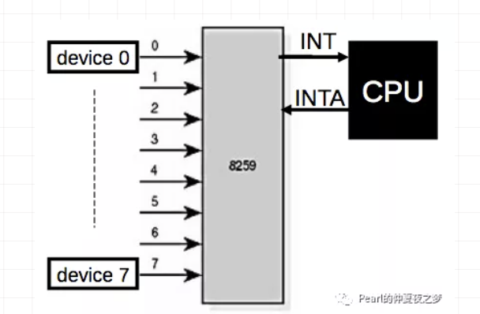
当硬件中断发生的时候，发生了什么？流程如图所示。
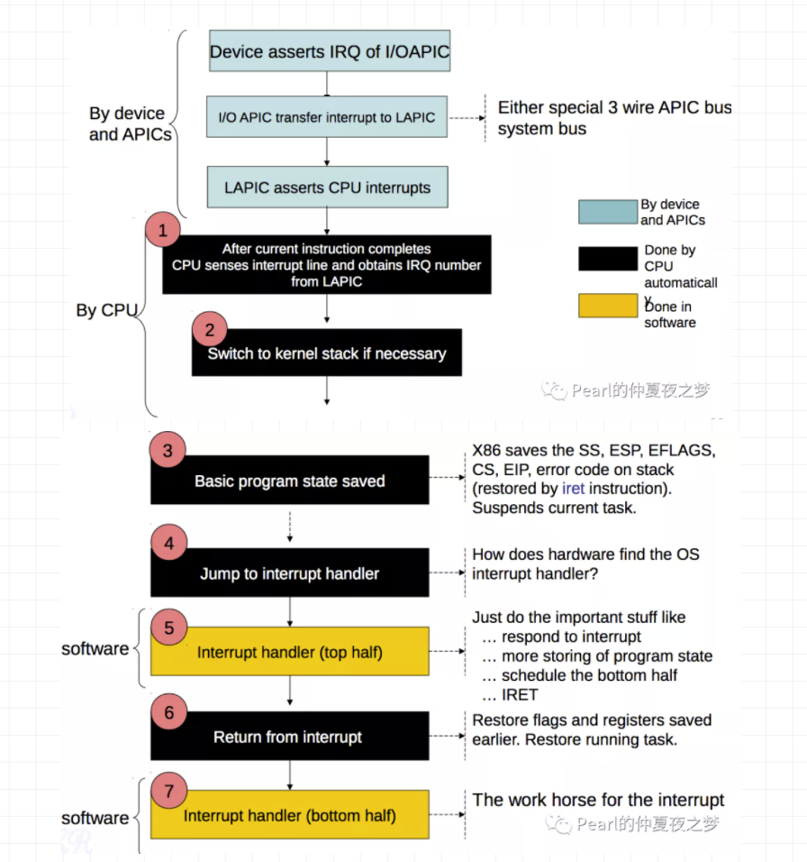
第1步，CPU完成当前指令后，立即响应硬件中断，先获取到中断向量。 第2步，切换到内核堆栈不是必须的，因为只有从用户模式转到内核模式，才需要进行堆栈切换。有可能中断来临时，CPU正在内核模式执行内核的指令。 第3步，保存程序状态，是为了保证当前正常执行的程序在中断服务完成后能恢复。 第4步到第7步，是中断处理程序执行流程。
典型的中断处理程序过程是:
- 保存CPU上下文
- 处理中断(如与IO设备通信)
- 调用内核调度程序
- 恢复CPU上下文并返回
如图所示，中断处理是有延时的，最小值受限于中断控制器，它的最大值受到操作系统的限制，如当内核和中断处理程序需要操作同一个全局变量，需要保证内核执行的是原子操作，中断处理程序需要等待原子操作完成，才能得到处理。 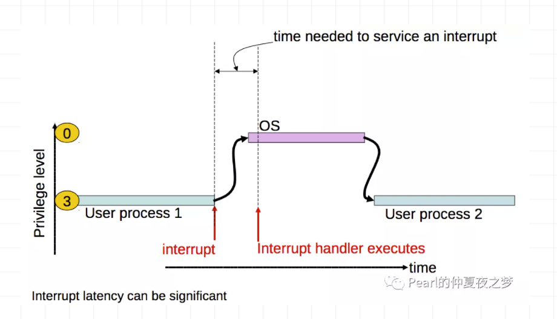
软件中断
下面讲软件中断，它是为何产生？ 为了让CPU能尽快响应其它硬件中断，中断处理程序需要小型化，可以只是设置flag或放入工作队列，让非关键性的代码推迟执行。于是提出了Top and Bottom Half Technique。 Top half：做最小的工作并从中断处理程序中返回。如保存寄存器、取消对其他中断的屏蔽、恢复寄存器并返回到以前的上下文。 Bottom half ：对Top half剩下的工作延迟处理。
硬件中断和软件中断的直观对比如图所示。硬件中断由一个设备（如PIC）向CPU的一个引脚发出信号产生；软件中断由正在执行的某条指令产生。
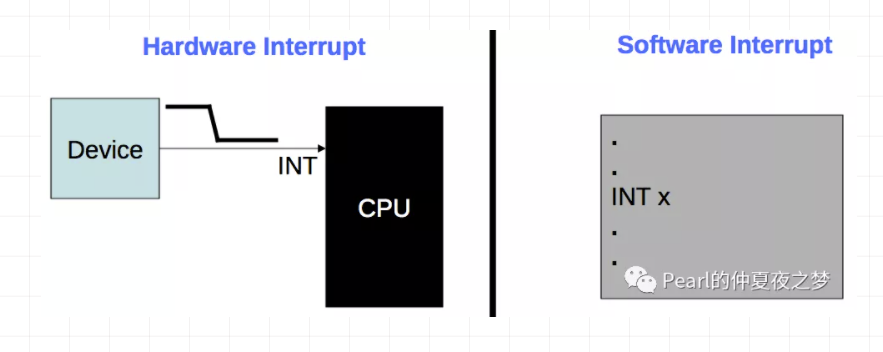
软件中断通过请求系统调用产生，如图所示。
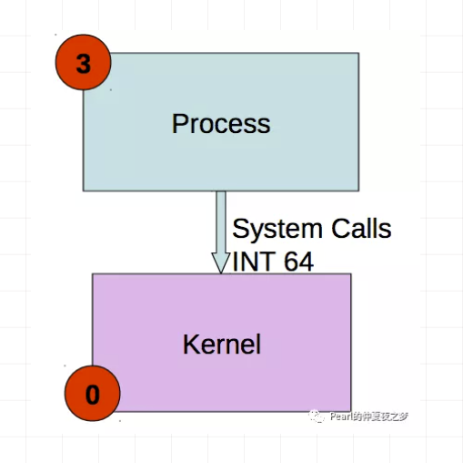
一个write system call的例子，如图所示。
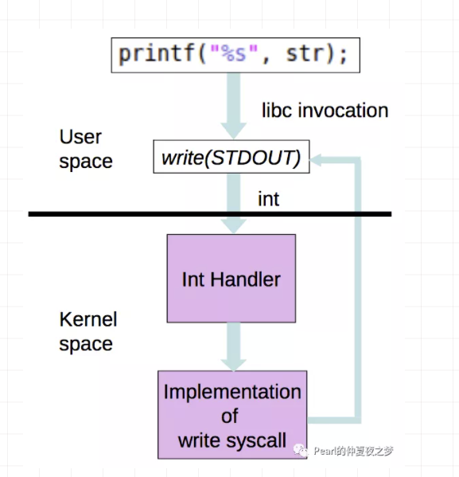
软件中断产生、处理和返回的流程，如图所示。
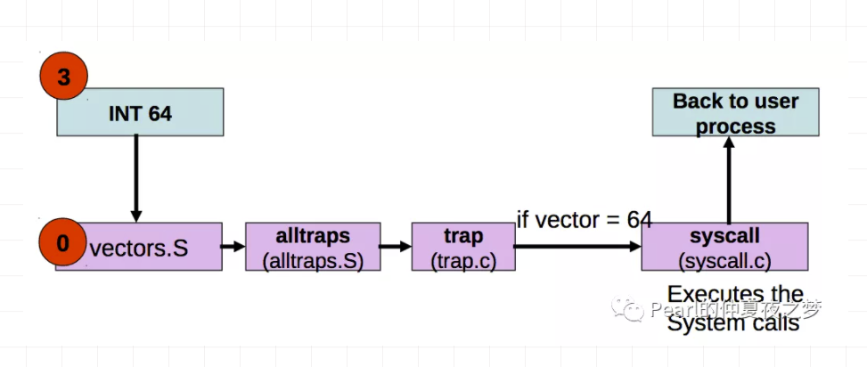
操作系统是如何区分系统调用的？答案是利用 System call number。直观上看，如图所示。
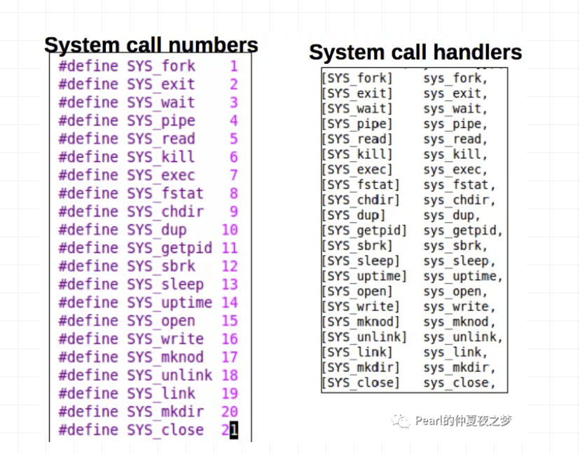
数据包的接收过程
网卡->内存
数据包如何进入内存，并被内核的网络模块开始处理的？流程如图所示。
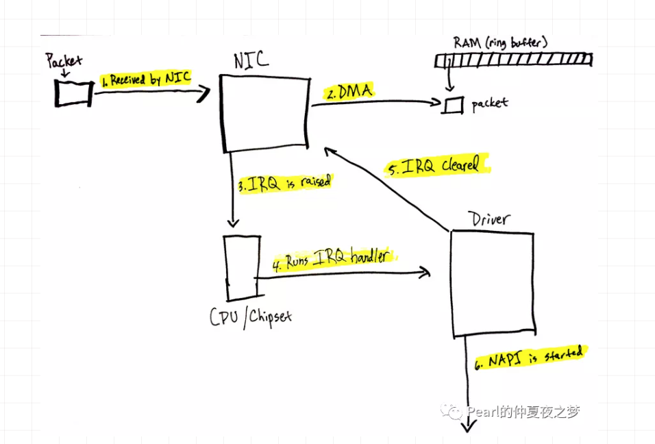
- 数据包进入网卡（如果目的地址不是该网卡，且该网卡没有开启混杂模式，该包会被网卡丢弃）。
- 网卡将数据包通过DMA方式写入指定的内存地址（该地址由网卡驱动分配并初始化）。
- 网卡raise硬件中断IRQ，通知CPU，告诉有数据包到来。
- CPU查询中断向量表，得到中断服务程序的指针，这个中断服务程序会调用网卡驱动程序中的相应函数。
- 网卡驱动先禁用网卡的硬件中断，表示驱动程序已经知道内存中有网络数据，如果网卡下次再接收到数据包，直接DMA方式写内存就可以，不需要raise硬件中断通知CPU（这样避免CPU不停地被中断）。
- 网卡驱动程序raise软件中断，内核启动软件中断服务。目的是将硬件中断服务程序中耗时久的部分放到软中断函数慢慢处理。
内存->内核网络模块->内核网络协议栈
内核在软件中断服务中接收链路层帧，并逐层递交上层协议栈处理，处理流程如下。
- 内核中有专门的进程负责接收网卡驱动raise的软中断，然后该进程调用对应的软中断处理函数，读取之前网卡写到内存中的数据包。
- 网卡驱动程序知道如何处理内存中的数据包格式，它将数据包转换成内核网络模块能识别的格式。
- 内核网络模块将数据包合并(这样可以减小调用协议栈的次数)，并将数据包放入CPU对应的接收队列(softnet_data.input_pkt_queue)中等待处理。
- CPU在软中断上下文中处理队列中的网络数据。
- 调用协议栈相应的函数，把数据包交给协议栈处理。
- 协议栈的处理过程（IP层->TCP/UDP层）不展开描述了。
- 用户空间的应用层通过调用socket接口接收数据。比如调用recvfrom函数阻塞等待数据到来，当socket fd收到通知后，recvfrom函数被唤醒，然后读取数据；或通过select/epoll等IO多路复用方式监听多个socket fd，只要其中有fd收到通知，进程主动调用recvfrom函数去读取数据。本文后面会展开描述。
CPU的接收队列input_pkt_queue是什么？ 网络设备模块在初始化时，为每个CPU初始化结构体softnet_data，用于处理网络数据。input_pkt_queue是该结构体的一个成员变量，作为接收队列，在对其操作的时候，关闭当前CPU的中断。 如果接收队列input_pkt_queue不为空，将接收队列拼接到处理队列process_queue上。接收队列input_pkt_queue清空，继续处理添加到处理队列process_queue的数据包，并且在处理前就打开当前的CPU中断。
关于IO的认知
IO是什么
IO是指Input/Output，即输入和输出。 IO从广义上说，是数据流动的过程。 IO有内存IO、网络IO和磁盘IO等。
从计算机架构上讲，CPU和内存与其他外部设备之间的数据转移过程就是IO。 本文从用户进程的角度理解IO。用户进程要完成IO读写，需要对内核发起IO调用，内核执行IO任务，返回IO结果，即完成一次IO。内核为每个IO设备维护一个内核缓冲区。
不带缓冲的IO和带缓冲的IO
IO分为不带缓冲的IO和带缓冲的IO（标准IO）。
不带缓冲的IO：读和写都调用内核中的系统调用read和write，写入内核缓冲区。
带缓冲的IO：目的是减少调用系统调用read和write的次数。方法是在用户空间建立流缓冲区。例如用户多次调用fwrite将数据写入流缓冲区，等流缓冲区满的时候只调用一次系统调用write，写入内核缓冲区。标准IO库实现的就是对IO流的缓存管理。
需要注意，不管是哪种IO，内存和磁盘之间，总是会有内核缓冲区的，这是IO设备的缓冲区。
总结一下数据流向路径: 不带缓冲的IO: 数据—内核缓存区—磁盘 带缓冲的IO: 数据—流缓存区—内核缓存区—磁盘
不管是哪种IO，因为用户进程是运行在用户空间的，不能直接操作内核缓冲区的数据。所以数据在传输过程中，总是需要从内核缓冲区复制到用户进程空间（对于带缓冲的IO，就是需要在内核缓冲区到用户缓冲区之间复制）。这个复制的过程对CPU和内存的开销是比较大的。
文件描述符
文件描述符(fd)在形式上是一个非负整数。 内核用以标记一个特定进程正在访问的文件。 当内核打开一个现有的文件或创建一个新的文件时，内核返回一个文件描述符，用于后续的IO操作。
流
流是可以进行读写操作的内核对象。 比如文件、管道、套接字。 Linux一切皆文件，一切都是流。用户进程都是对这些流进行读写操作，实现数据交换。 用户进程用文件描述符fd实现对流的操作。 准确地说，流是带缓冲的IO（标准IO）才有的概念。 流有方向。对流的读写操作，可以理解为IO操作。如图所示。
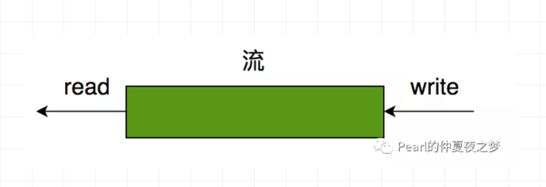
如果流中没有数据，读取，就阻塞。进一步说，是用户缓冲区没有数据，无法读取数据。
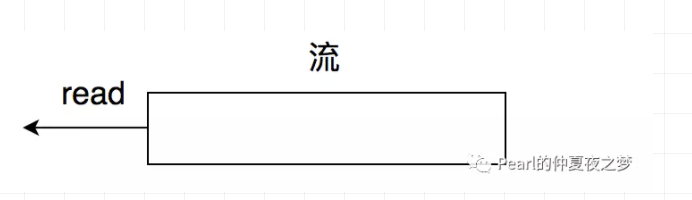
如果流中数据已满，写入，就阻塞。进一步说，是用户缓冲区数据已满，无法写入数据。
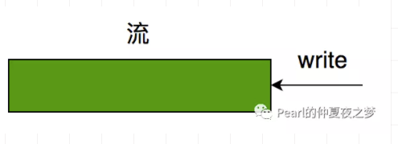
IO操作
对于用户进程的一个读IO操作，包括以下阶段： 1.用户进程调用IO系统调用读数据。 2.内核先看下内核缓冲区是否有数据，如果没有数据，则从设备读取，先加载到内核缓冲区，再复制到用户进程缓冲区；如果有数据，直接复制到用户进程缓冲区（对于标准IO）。
直观的流程如图所示。
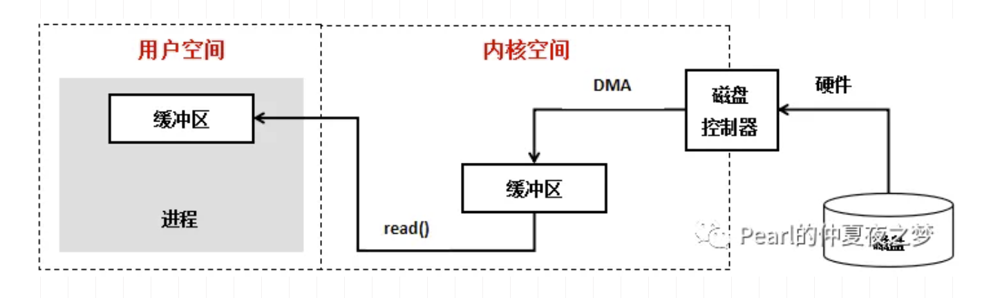
具体地说，对于一个网络IO输入操作，如果内核缓冲区无数据，包括以下阶段：
- 用户进程调用Socket API
- 等待网络数据到达网卡这个硬件设备
- 通过DMA，直接从网卡读取到内核缓冲区
- 内核把内核缓冲区的数据复制到用户空间
总结一下，一次完整的网络IO输入操作，是应用进程进行系统调用，内核从网卡读取数据写入内存，接着内核把数据从内存中复制到到用户空间的过程。 这个过程，有很多种IO模型可以处理，就引发了下文要讲的同步IO（包括阻塞IO、非阻塞IO、IO多路复用）和异步IO模型。
IO就绪
我们常说的fd就绪，也就是IO就绪，是IO可读或可写了，即应用程序调用的内核系统调用返回结果了，可以从内核缓冲区读取数据或者写入数据到内核缓冲区。
同步IO和异步IO
IO模型从大类上分，分为同步IO和异步IO。
同步IO(synchronous IO)
应用程序通过系统调用发送IO请求给内核后，必须等待IO返回后才继续执行后续代码。 同步IO有以下几种模型。
阻塞式IO(blocking IO)
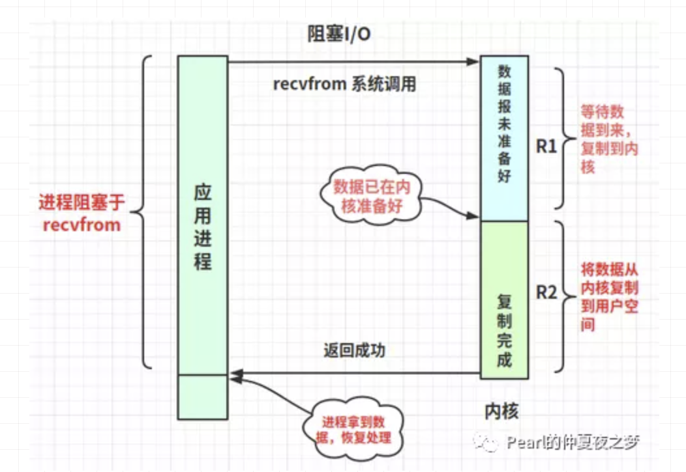
- 应用进程调用系统调用recvfrom，应用进程进入阻塞状态。
- 内核准备好数据，写入内核缓冲区。
- 内核将数据从内核缓冲区复制到用户空间。
- 应用进程被唤醒，进入执行状态，处理拿到的数据。
R1和R2阶段的应用进程都是阻塞的。
非阻塞式IO(nonblocking IO)
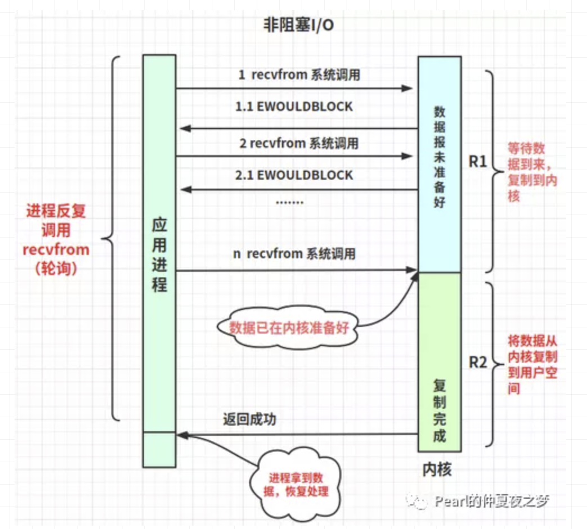
- 应用进程轮询调用系统调用recvfrom（非阻塞方式），如果内核未准备好数据，返回错误EWOULDBLOCK。
- 内核准备好数据，写入内核缓冲区。
- 这次应用进程调用系统调用recvfrom，内核会返回非错误码数据，并将数据从内核缓冲区复制到用户空间。
- 应用进程被唤醒，进入执行状态，处理拿到的数据。
R1阶段的应用进程是非阻塞的，R2阶段的应用进程是阻塞的。
IO多路复用(IO multiplexing)
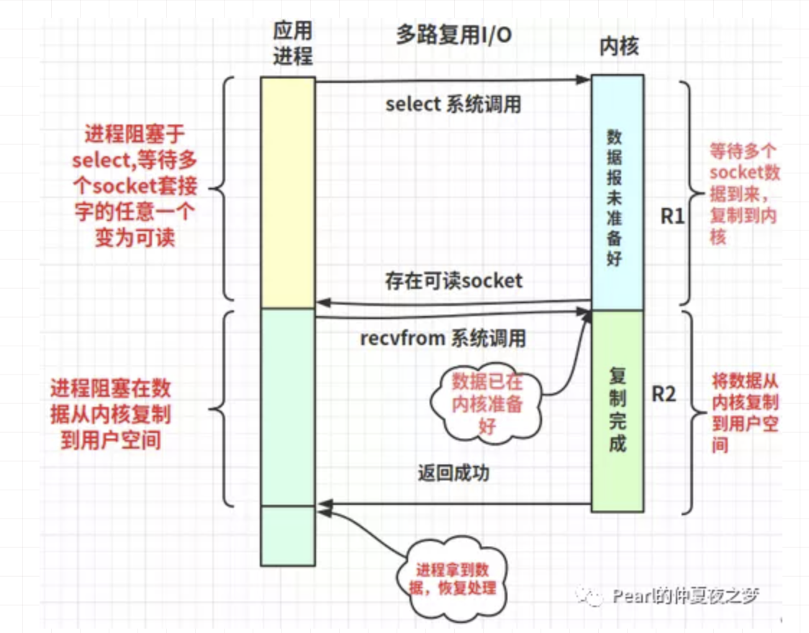
- 应用进程调用系统调用select（这里以select为例，还有poll、epoll等IO多路复用器），进程进入阻塞状态。（这里的阻塞不同于阻塞式IO只等待一个socket fd，而是同时等待多个socket fd）
- 内核将可读的socket fd数据准备好，写入内核缓冲区。
- 应用进程收到select的返回结果，知道存在任意数量可读的socket fd。对于这些socket fd，应用进程遍历socket fd（select和poll是遍历所有fd，epoll是只遍历可读的fd），分别调用系统调用recvfrom，内核将数据从内核缓冲区复制到用户空间。
- 应用进程被唤醒，进入执行状态，处理拿到的数据（多个socket fd的返回结果）。
R1和R2阶段的应用进程都是阻塞的。
信号驱动IO(signal-driven IO)
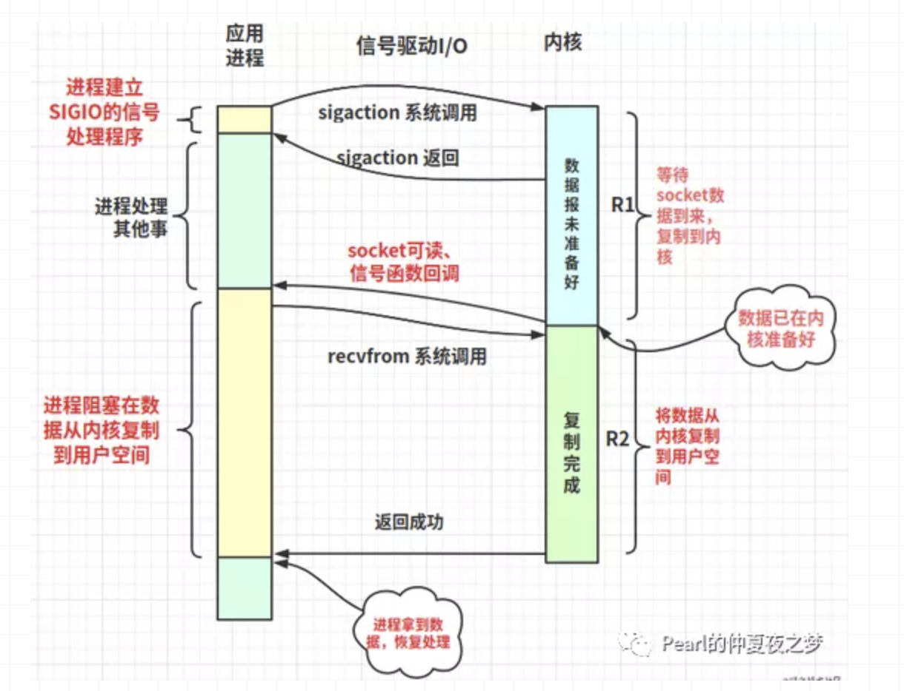
- 应用进程内建立信号捕获函数，和socket fd关联。
- 应用进程调用系统调用sigaction，收到调用返回后，接着应用进程去执行其它代码。
- 当内核准备好数据，发送SIGIO信号给应用进程。
- 应用进程回调信号捕获函数，调用系统调用recvfrom。
- 应用进程被唤醒，进入执行状态，处理拿到的数据。
R1阶段的应用进程是非阻塞的，R2阶段的应用进程是阻塞的。
异步IO(asynchronous IO)
相对于同步IO，异步IO在用户进程调用系统调用aio_read以后，无论内核缓冲区数据是否准备好，都立即返回，不会阻塞当前进程，转而处理其它代码。
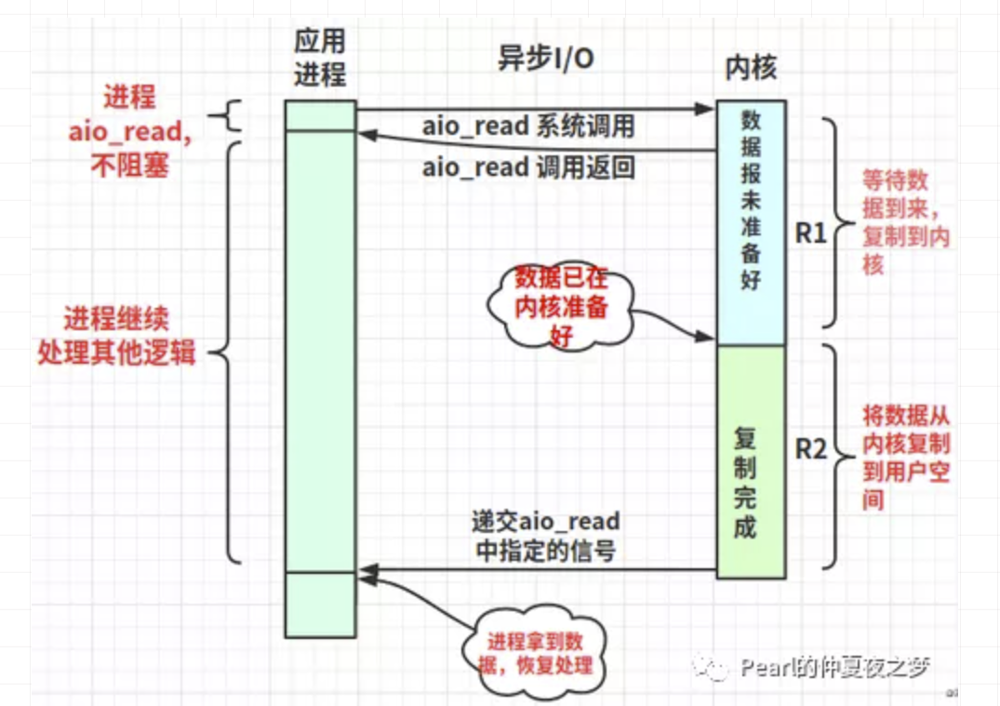
- 应用进程调用系统调用aio_read，收到调用返回后，接着应用进程去执行其它代码。
- 内核准备好数据，并且将数据从内核缓冲区复制到用户空间。
- 内核发送aio_read中指定的信号给应用进程。
- 应用进程转而处理拿到的数据。
R1和R2阶段的应用进程都是非阻塞的。
为什么提出IO多路复用
以上在同步IO模型中已经介绍了IO多路复用。IO多路复用也是目前主流软件，如nginx、redis、kafka等使用的模型。它可以让一个线程在同一时刻监听多个socket fd。 技术的发展都是有迹可循，为了解决某种问题提出，那么IO多路复用是怎么产生的？
先介绍下阻塞等待和非阻塞忙轮询两种模型，分别对应上面同步IO中的阻塞式IO和非阻塞式IO。
阻塞等待
阻塞等待指的是被动地等待IO状态到来，即阻塞等待IO可读或可写。 阻塞等待的时候，CPU是空闲的，即不占用CPU的时间片（在上文已经说明原因）。 虽然不占用CPU时间片，但无法处理其它IO状态的到来（因为进程在阻塞状态等待IO可操作，无法进入就绪状态），即单个CPU无法并发处理多个IO请求。
优点：处理接收数据的时候，不浪费性能资源。 缺点：同一时刻，只能处理一个流的阻塞监听，即单个CPU不能并发处理多个IO请求。
虽然可以用阻塞+多线程/多进程的模型，实现多个CPU可以同一时刻监听多个IO状态。 但是开辟线程/进程浪费内存资源，而且切换线程/进程也浪费CPU。
非阻塞忙轮询
非阻塞忙轮询指的是主动地轮询IO状态，判断可读或可写。 非阻塞忙轮询判断IO状态的时候，CPU是忙碌的，即CPU时间片被占用。 注意：所以非阻塞忙轮询和异步是两个概念。
缺点：浪费CPU。
伪代码如下。CPU 大部分时间在做 while 和 for 判断处理，CPU 的利用率不高。
1while true {
2 for i in 流[] {
3 if i has 数据 {
4 读 或者 其他处理
5 }
6 }
7}
IO多路复用解决的问题
最基础的网络编程伪代码如下。
1创建socketint s = socket(AF_INET, SOCK_STREAM, 0); // 得到socket fd
2绑定bind(s, ...)
3监听listen(s, ...)
4接受客户端连接int c = accept(s, ...)
5接收客户端数据recv(c, ...);
6将数据打印出来printf(...)
先创建socket fd，依次调用bind、listen、accept，最后调用recv接收数据。recv是个阻塞方法，当程序运行到recv时，进程进入阻塞状态（不占用CPU资源），直到接收到数据，进程转到执行状态处理数据。进程阻塞在accept和recv。
但是有没有一种方式，既有阻塞等待不浪费CPU资源的优点，也能避免阻塞等待同一时刻只能处理一个流的问题，而是可以在同一时刻监听多个socket fd？即同时accept和recv多个socket fd。答案就是IO多路复用。
所以产生了select、poll、epoll等IO多路复用技术，目的是解决单线程同一时刻处理大量IO读写请求，并且不浪费CPU。
什么是 IO 多路复用
阻塞等待只能同一时刻只能监听一个IO状态。 为了解决大量 IO 请求读写的问题，提出了 IO 多路复用。 如果同一流程想同一时刻监听多个IO状态。要么非阻塞忙轮询；要么用 select/epoll等IO多路复用器，告诉用户态有哪些 IO 可读可写，一起处理。即 IO 多路复用可以实现单线程在同一时刻可以监听多个IO状态。IO多路复用在非忙轮询状态，不浪费CPU。
select 简介
先上伪代码。
1while true {
2 select(流[]); // 阻塞。CPU 可以去做其他事。如果有流可读了，返回。
3
4 // 有消息抵达
5 for i in 流 [] { // 需要依次判断所有的流哪个可读
6 if i has 数据 { // 如果可读的流数量少，浪费性能
7 读 或者 其他处理
8 }
9 }
10}
进一步的代码。
1int s = socket(AF_INET, SOCK_STREAM, 0);
2bind(s, ...);
3listen(s, ...)
4int fds[] = 存放需要监听的socket
5
6while(1){
7 int n = select(..., fds, ...)
8 for(int i=0; i < fds.count; i++){
9 if(FD_ISSET(fds[i], ...)){
10 // fds[i]的数据处理
11 }
12 }
13}
select的流程是：
- 应用进程调用系统调用select(fds)。
- select阻塞直到有任意数量fd可读。
- 应用进程遍历fds，通过FD_ISSET判断哪些socket fd可读。
- 应用进程处理返回的数据。
select的缺点是：
- 应用进程每次select系统调用都需要应用空间复制整个fds列表到内核空间。
- 内核需要主动遍历n次，才能返回哪些fd可读可写，CPU浪费在了内核空间。
- 规定select的最多同时监听1024个socket fd。
- 应用进程被唤醒后，不知道那些socket fd可读，需要遍历所有fd。
epoll 简介
先上伪代码。
1while true {
2 可处理的流[] = epoll_wait(epoll_fd); // 阻塞
3
4 // 有消息抵达
5 for i in 可处理的流[] {
6 读 或者 其他处理
7 }
8}
进一步的代码。
1int s = socket(AF_INET, SOCK_STREAM, 0);
2bind(s, ...);
3listen(s, ...)
4int epfd = epoll_create(...);
5epoll_ctl(epfd, ...); // 将所有需要监听的socket添加到epfd中
6
7while(1){
8 int n = epoll_wait(...)
9 for(接收到数据的socket fds){
10 // fds[i]的数据处理
11 }
12}
epoll的流程是：
- 应用进程调用系统调用epoll_create，创建eventpoll对象，用于维护等待列表和就绪列表。
- 应用进程调用系统调用epoll_ctl，添加要监听的fd。
- 应用进程调用系统调用epoll_wait。
- epoll_wait阻塞直到有任意数量fd可读。
- 应用进程遍历就绪列表，得到数据。
- 应用进程处理返回的数据。
epoll的优点是：
- 可以同时监听大量的socket fd。能够处理大量的链接请求(系统可以打开的文件数目) 。
- 应用进程被唤醒后，只需要遍历可读的fd。
cat /proc/sys/fs/file-max得到当前操作系统可以打开的最大文件描述符个数。
epoll详解
关于epoll更多细节，在《深入理解Linux IO模型(二)》讲述。
Reference
UNIX环境高级编程（第3版）https://book.douban.com/subject/25900403/ http://www.cse.iitm.ac.in/~chester/courses/15o_os/slides/5_Interrupts.pdf https://blog.packagecloud.io/eng/2016/10/11/monitoring-tuning-linux-networking-stack-receiving-data-illustrated/ https://blog.packagecloud.io/eng/2016/06/22/monitoring-tuning-linux-networking-stack-receiving-data/ https://mp.weixin.qq.com/s/kWDKpgmcOQFjoBAK3LyPTg https://juejin.cn/post/6892687008552976398#heading-26